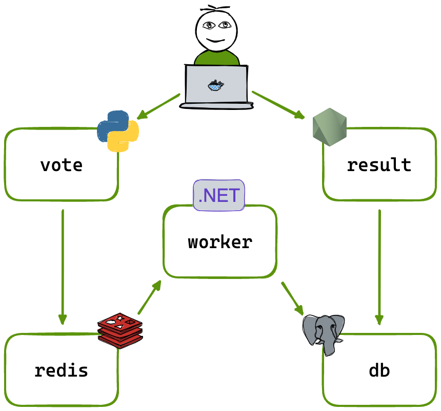
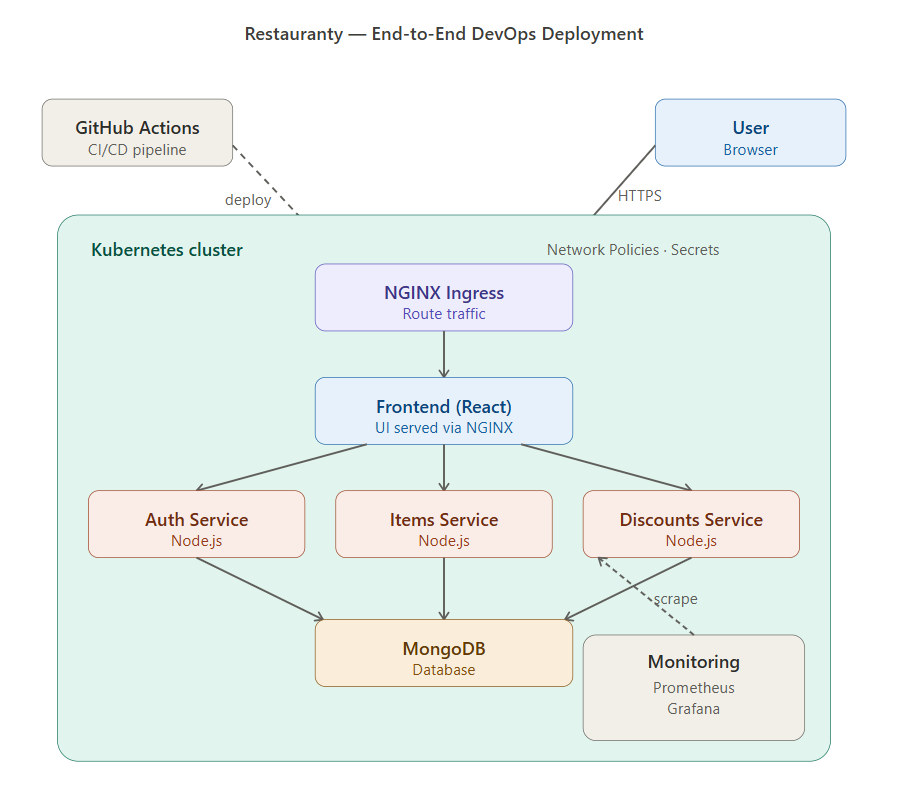
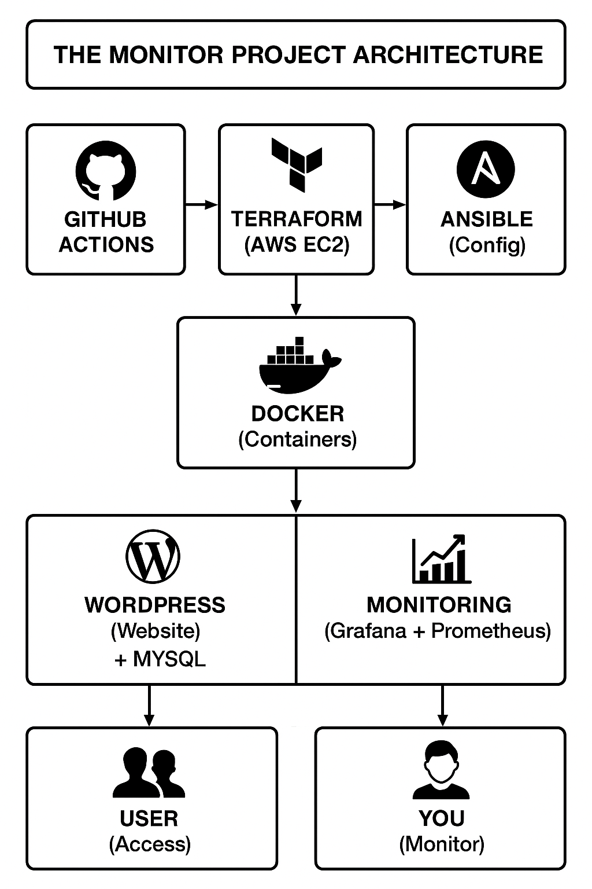
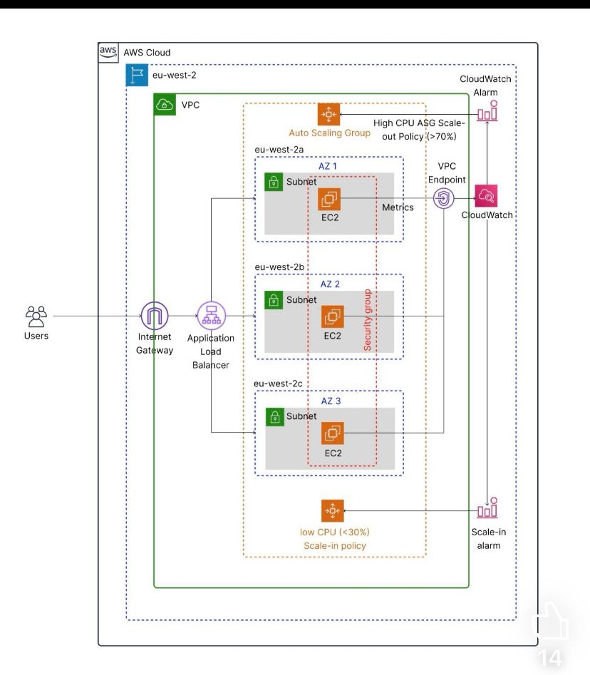
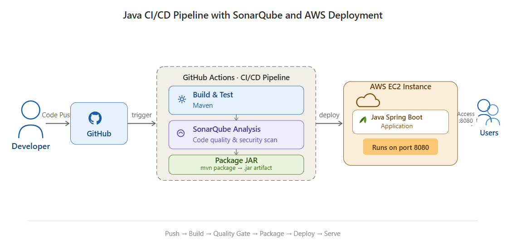

DevOps & Cloud Engineer with hands-on experience building and automating cloud infrastructure using AWS, Kubernetes, Terraform, and CI/CD pipelines.
I have deployed production-style applications on AWS EKS, automated delivery with GitHub Actions, and built monitoring solutions with Prometheus and Grafana to improve visibility, reliability, and deployment consistency.
My focus is on scalable infrastructure, reliable releases, observability, and cloud operations, supported by a practical background in troubleshooting and systems support.
A focused selection of DevOps and cloud projects covering Kubernetes, CI/CD, infrastructure automation, observability, and production-style deployments on AWS.

Built and deployed a production-style microservices platform on AWS EKS using Terraform, Kubernetes, Docker, and GitHub Actions. The platform includes 4 services (auth, tenant, task, gateway) with PostgreSQL, external access through an AWS LoadBalancer, and persistent storage backed by EBS.

Designed and deployed a full-stack expense tracking application on AWS EKS using Kubernetes, Docker, and GitHub Actions. Added secure configuration with Kubernetes Secrets and real-time observability with Prometheus and Grafana.

Built and deployed a 3-tier microservices voting application on AWS EKS using Kubernetes and Docker. Implemented CI/CD automation and rolling updates to support reliable delivery with minimal downtime.

Designed and deployed a microservices-based application on Kubernetes with Docker, CI/CD automation, and monitoring using Prometheus and Grafana for improved system visibility.

Implemented a monitoring stack with Prometheus, Grafana, Terraform, and Ansible on AWS, using Docker containers to provide real-time observability for a sample application environment.

Built a multi-AZ auto-scaling web application on AWS using Terraform, an Application Load Balancer, EC2, and CloudWatch to validate dynamic scaling behavior under load.

Built a CI/CD pipeline for a Java Spring Boot application using GitHub Actions and SonarQube, with automated deployment to AWS EC2 and integrated code quality checks.
I am open to DevOps, cloud, IT operations, and infrastructure-focused roles where I can contribute to reliable deployments, automation, and system improvement.